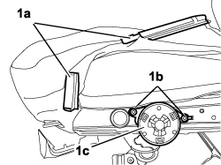

7045A55 MANUAL DEVICE TO ADJUST FRONT SEAT ANGLE - R.R.
- Path
- Procedures > 70 FITTINGS > 7045 FRONT SEATS > 7045A FRONT SEAT ASSEMBLY > 7045A55 MANUAL DEVICE TO ADJUST FRONT SEAT ANGLE - R.R.
- Kind
- repair procedure (removal / refitting; the operation number is the code)
- Applies to
- all engines; all production periods
- Interactive page
- https://sloeber94.github.io/elrnDB-fCrm/en/#/194001099
Applies to: all engines; all production periods
 Removing
Removing
 Refitting
RefittingOp. 7045A24 FRONT SEAT BACKREST ANGLE ADJUSTMENT KNOB (ONE), LEFT OR RIGHT - R.R.
Op. 7045A33 CONTROL LEVER FOR DEVICE TO ADJUST FRONT SEAT SWINGING - RR
Op. 7045a43 SEAT EXTERIOR GUARD - R R
1. Release the mounting points (1a) for the cushion cover, undo the bolts (1b) and remove the device (1c).

Applies to: all engines; all production periods
Refitting
Removing- Position the device, tighten the bolts carefully and secure the mounting points.
Op. 7045a43 SEAT EXTERIOR GUARD - R R
Op. 7045A33 CONTROL LEVER FOR DEVICE TO ADJUST FRONT SEAT SWINGING - RR
Op. 7045A24 FRONT SEAT BACKREST ANGLE ADJUSTMENT KNOB (ONE), LEFT OR RIGHT - R.R.
Topics linked from this page (3)
- 7045A24 FRONT SEAT BACKREST ANGLE ADJUSTMENT KNOB (ONE), LEFT OR RIGHT - R.R.
- 7045A33 CONTROL LEVER FOR DEVICE TO ADJUST FRONT SEAT SWINGING - RR
- 7045A43 FRONT SEAT EXTERIOR GUARD (ONE), LEFT OR RIGHT - R.R